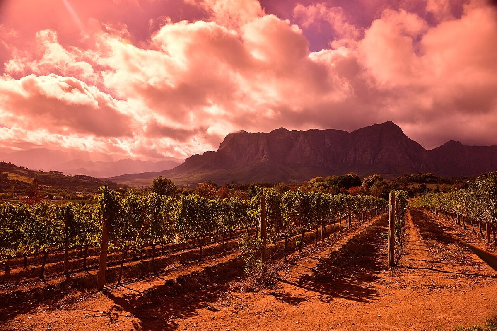

TINTO
Franschhoek, el «rincón francés», es un valle rodeado de montañas al este de Stellenbosch donde se asentaron los hugonotes a finales del siglo XVII. Es conocido por sus viejas viñas de Semillon, sus espumosos y su oferta gastronómica.

A partir de 1688 llegaron al Cabo varios grupos de hugonotes, protestantes franceses que habían abandonado su país tras la revocación del Edicto de Nantes. La Compañía Neerlandesa de las Indias Orientales les concedió tierras en un valle entonces llamado Olifantshoek, «rincón de los elefantes», que pronto pasó a conocerse como Franschhoek, «rincón francés». Los recién llegados aportaron sus conocimientos agrícolas y vitícolas, y muchas fincas del valle conservan todavía los nombres franceses que recibieron entonces, como La Motte, La Provence o Bellingham. Aunque la lengua francesa se perdió en pocas generaciones, la herencia hugonote se recuerda en el monumento erigido en el pueblo en el siglo XX y en un museo dedicado a su historia.
Durante buena parte de los siglos XIX y XX el valle combinó la viña con los frutales, y gran parte de su uva se vendía a cooperativas. Desde los años ochenta y noventa numerosas fincas empezaron a embotellar sus propios vinos, y Franschhoek se convirtió en uno de los grandes destinos turísticos del Cabo, con restaurantes reconocidos, alojamientos y un tranvía turístico que recorre las bodegas.
El valle está cerrado por montañas altas por tres de sus lados, lo que crea un clima mediterráneo algo más cálido en verano que el de las zonas costeras, con mayor pluviosidad invernal y noches frescas por el aire que desciende de las sierras. Las diferencias de altitud y orientación entre el fondo del valle y las laderas son notables. En el fondo del valle predominan los suelos aluviales arenosos de origen fluvial, mientras que en las laderas aparecen suelos de granito descompuesto y de arenisca de la formación de Table Mountain, más pobres y mejor drenados.
Franschhoek conserva algunas de las viñas de Semillon más antiguas de Sudáfrica, una variedad que en el siglo XIX dominaba el viñedo del Cabo. Con ellas se elaboran blancos texturados, con notas de cera, cítricos y miel, que ganan complejidad con el tiempo. El valle es también un centro importante de espumosos de método tradicional, conocidos como Méthode Cap Classique, a base de Chardonnay y Pinot Noir. Entre los tintos destacan el Cabernet Sauvignon y la Syrah, y también se cultivan Chenin Blanc, Chardonnay y Merlot. Algunas bodegas de la zona compran además uva en otras regiones del Cabo, por lo que no todos los vinos elaborados en el valle llevan la denominación Franschhoek.